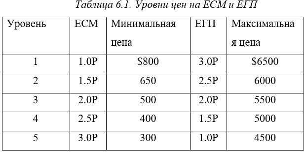
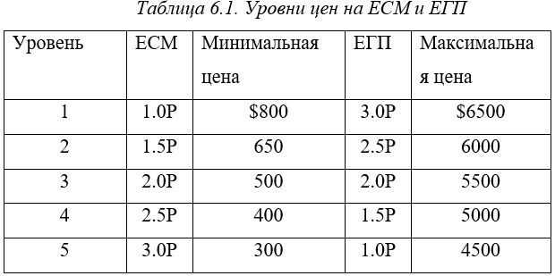

Решением совета директоров крупного промышленного концерна вы назначены президентом компании. Компания владеет несколькими фабриками. Каждый месяц компания покупает сырьё, обрабатывает его и продаёт изготовленную продукцию публике, ждущей её с нетерпением. Вам теперь придётся решать, сколько и каких товаров выпускать, стоит ли и когда именно расширять производственные мощности, как финансировать их расширение и как принять скромно-застенчивый вид, отчитываясь о незаконных прибылях. Перед тем как приступить к работе, вы строите модель промышленности в целом, чтобы в частном порядке отработать свою линию поведения. И вот какую игру вы в результате изобрели.
Моделирование ведётся с шагом по времени в один месяц. В начале игры каждый игрок (президент компании) получает две обычные фабрики, четыре единицы сырья и материалов (сокращённо ЕСМ), две единицы готовой продукции (сокращённо ЕГП) и 10000 долларов наличными. Игроки занумерованы от 1 до N, и в первом круге игрок 1 – старший. С каждым кругом (то есть ежемесячно) роль старшего переходит к следующему по порядку номеров игроку, после N-го старшим становится опять первым (так что номер старшего в круге Т вычисляется по формуле (T mod N ) + 1). На торгах при прочих равных условиях выигрывает самый старший игрок (тот, кто будет старшим в следующем круге).
Описанные ниже сделки происходят каждый месяц и именно в таком порядке. Если в какой-то момент компания не может выполнить своих финансовых обязательств, она немедленно объявляется банкротом. Её имущество пропадает, и она выходит из игры (так что лучше иметь наготове запас наличных). Все денежные расчёты происходят между отдельными игроками и одним общим банком. Невозможна передача денег прямо от игрока к игроку, что исключает сговор, направленный против какой-либо компании. Банк кроме того, контролирует источники сырья и скупает всю готовую продукцию.
1.Постоянные издержки. Каждый игрок (в порядке убывания старшинства, начиная со старшего) платит 300 долларов за каждую имеющуюся у него ЕСМ, 500 долларов за каждую наличную ЕГП, 1000 долларов за владение каждой обычной фабрикой и 1500 долларов – за владение автоматизированной. Это постоянные ежемесячные издержки каждого игрока, даже если он в этом круге не предпринимает никаких других действий.
2.Определение обстановки на рынке. Банк решает и сообщает игрокам, сколько ЕСМ продаст в этот раз и какова их минимальная цена. Объявляется также, сколько ЕГП в общей сложности будет закуплено и какова максимальная цена.
 {#todo исправить#}

{#todo исправить#}

В табл. 6.1 приведены пять уровней предложения ЕСМ и спроса на ЕГП (обратите внимание, что с ростом одной из этих величин другая убывает), а также верхние и нижние границы цен для каждого случая. В число игроков Р не включены те, кто обанкротился, и Р может, таким образом, быть меньше N. Произведения 1.5Р и 2.5Р округляются до ближайшего целого с недостатком. В табл. 6.2 приведена матрица вероятностей перехода, в соответствии с которой банк определяет новый месячный уровень спроса и предложения, исходя из прежнего. Предполагается, что в нулевом месяце уровень равен 3.
 {#todo исправить2#}
{#todo исправить2#}
3.Заявки на сырьё и материалы. Каждый игрок тайно от других готовит заявку на ЕСМ на текущий месяц. В заявке указывается требуемое число ЕСМ и предлагается цена не ниже банковской минимальной (запрос нуля ЕСМ или предложение цены ниже минимальной автоматически исключает игрока из торгов в этом месяце). Все заявки раскрываются одновременно, и имеющиеся ЕСМ распределяются между игроками в порядке убывания предложенной цены. Если сырья не хватает на всех, заявки с предложением более низкой цены не удовлетворяются. При прочих равных условиях сырье достаётся самому старшему игроку. Игроки платят за сырьё при его получении. Банк не сохраняет оставшееся после удовлетворения заявок сырьё на следующий месяц.
4.Производство продукции. Все игроки по очереди (по убыванию старшинства, начиная со старшего) объявляют, сколько ЕСМ они собираются переработать в ЕГП в текущем месяце и на каких фабриках. Каждый игрок тут же обязан покрыть расходы на производство. Обычная фабрика может за месяц переработать одну ЕСМ при затратах 2000 долларов. Автоматизированная фабрика может либо сделать то же, либо переработать 2 ЕСМ при затратах в 3000 долларов. Конечно, чтобы переработать ЕСМ, их надо иметь.
5.Продажа продукции. При покупке банком у игроков ЕГП организуются примерно такие же торги, как и при продаже ЕСМ. Заявленные цены не должны превышать максимальную цену, установленную банком, причём банк покупает ЕГП в первую очередь у тех, кто заявил более низкую цену. При прочих равных условиях предпочтение отдаётся старшему игроку. Если предпочтение превышает спрос, наиболее дорогие ЕГП остаются непроданными. Игроки получают деньги за продукцию при её продаже.
6.Выплата ссудного процента. Каждый игрок платит один процент от общей суммы непогашенных ссуд, в том числе и тех, которые будут погашены в текущем месяце.
7.Погашение ссуд. Каждый игрок, получивший ссуду до текущего месяца, должен её погасить. Поскольку возвращение ссуд предшествует получению новых, платить надо наличными.
8.Получение ссуд. Теперь каждый игрок может получить ссуду. Ссуды обеспечиваются имеющимися у игрока фабриками; под обычную фабрику даётся ссуда 5000 долларов, под автоматизированную – 10000 долларов. Общая сумма непогашенных ссуд не может превышать половины гарантированного капитала, но в этих пределах можно свободно занимать. Банк немедленно выплачивает ссуду игроку. Срок погашения ссуды истекает через 12 месяцев – например, ссуду, взятую в 3-м месяце, возвращать надо в 15-м. Нельзя погашать ссуды раньше срока.
9.Заявки на строительство. Игроки могут строить новые фабрики. Обычная фабрика стоит 5000 долларов и начинает давать продукцию на 5-й месяц после начала строительства; автоматизированная фабрика стоит 10000 долларов и даёт продукцию на 7-й месяц после начала строительства. Обычную фабрику можно автоматизировать за 7000 долларов, реконструкция продолжается 9 месяцев, всё это время фабрика может работать как обычная. Половину стоимости фабрики надо платить в начале строительства, вторую половину – за месяц до начала выпуска продукции в этой же фазе цикла. Общее число имеющихся и строящихся фабрик у каждого игрока не должно превышать шести.
Игра оканчивается после некоторого фиксированного числа кругов (13) или когда обанкротятся все игроки, кроме одного. Чтобы подсчитать общий капитал компании, надо сложить стоимость всех фабрик (по цене, по которой их можно было бы построить заново), стоимость имеющихся у неё ЕСМ (по минимальной банковской цене текущего месяца), стоимость имеющихся ЕГП (по максимальной банковской цене текущего месяца) и имеющиеся у компании наличные. После этого надо вычесть общую сумму ссуд и предстоящих расходов по уже начатому строительству. Если к концу игры приходят несколько игроков, результаты считаются по их капиталам.
Любой игрок в любой момент может узнать состояние дел другого игрока – его капитал, наличные, взятые ссуды, всё, что касается готовой продукции, имеющихся и строящихся фабрик. Во время торгов игроки ничего не знают о заявках, сделанных другими, но, как только банк собрал все заявки, они обнародуются, и количество купленных или проданных каждым игроком единиц становится известно всем. Игроки могут сами вести любые записи, но банк не предоставляет им никакой информации, кроме той, которая предусмотрена правилами игры.